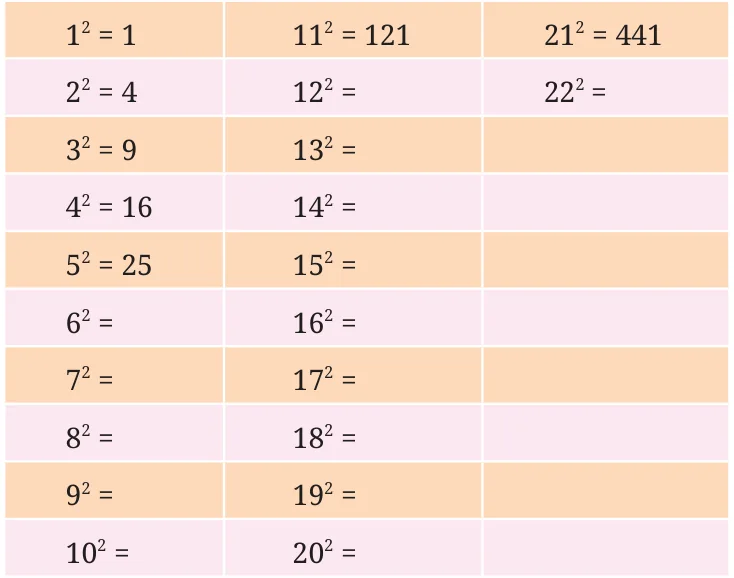
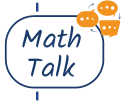
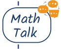
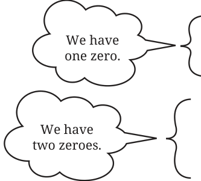
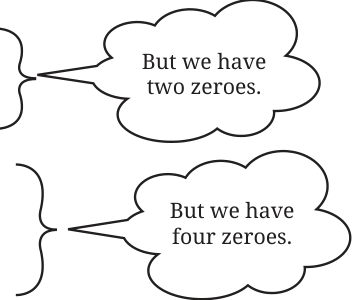

Find the squares of the first 30 natural numbers and fill in the table below.


What patterns do you notice? Share your observations and make conjectures. Study the squares in the table above. What are the digits in the units places of these numbers? All these numbers end with 0, 1, 4, 5, 6 or
- 9.None of them end with 2, 3, 7 or 8.

If a number ends in 0, 1, 4, 5, 6 or 9, is it always a square? The numbers 16 and 36 are both squares with 6 in the units place. However, 26, whose units digit is also 6, is not a square. Therefore, we cannot determine if a number is a square just by looking at the digit in the units place. But, the units digit can tell us when a number is not a square. If a number ends with 2, 3, 7, or 8, then we can definitely say that it is not a square. Write 5 numbers such that you can determine by looking at their units digit that they are not squares.
The squares, 1 , 9 , 11 , 19 , 21 , and 29 , all have 1 in their units place. Write the next two squares. Notice that if a number has 1 or 9 in the units place, then its square ends in 1.
Let us consider square numbers ending in 6: \(16 = 4\) , \(36 = 6\) , \(196 = 14\) ,
\(256 = 16\) , \(576 = 24\) , and \(676 = 26\) .

Which of the following numbers have the digit 6 in the units place?
- (i)38 (ii) 34 (iii) 46 (iv) 56 (v) 74 (vi) 82
Find more such patterns by observing the numbers and their squares from the table you filled earlier. Consider the following numbers and their squares.


\(= 100 = 400 = 1600\)
\(100 = 10000\)
\(200 = 40000\)
\(700 = 490000\)
\(900 = 810000\)
If a number contains 3 zeros at the end, how many zeros will its square have at the end? What do you notice about the number of zeros at the end of a number and the number of zeros at the end of its square? Will this always happen? Can we say that squares can only have an even number of zeros at the end?
What can you say about the parity of a number and its square?